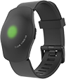

欢迎使用 FIZZO WATCH SDK !
什么是 FIZZO WATCH SDK？
FIZZO WATCH SDK 是由互韦涵电子科技有限公司发布的帮助Android二次开发快速连接设备、读取运动数据、写入数据的开发包。
如果您有问题或想了解更多信息...
- 公司主页:www.fizzo.cn
- 联系QQ：35686324
- 联系电话：15221798774
FIZZO WATCH SDK 是由互韦涵电子科技有限公司发布的帮助Android二次开发快速连接设备、读取运动数据、写入数据的开发包。